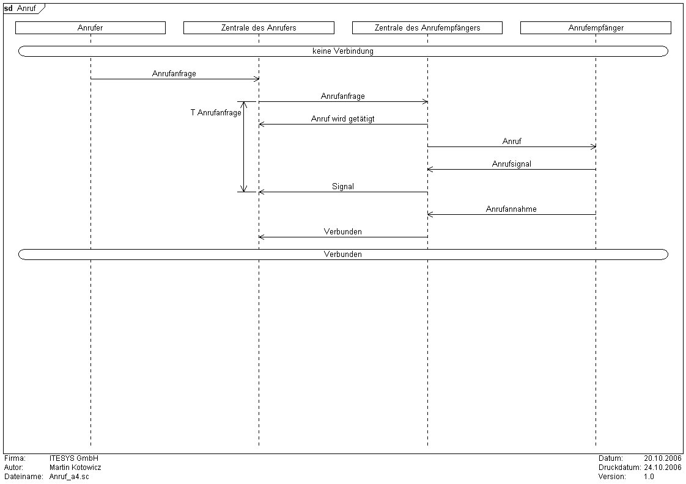

Syntax
Parameter
Syntax
Parameter
 size
size
| Wert | Bedeutung |
|---|---|
| A0 | Das Diagramm hat die Größe einer DIN A0 Seite (118,9cm x 84,1cm) |
| A1 | Das Diagramm hat die Größe einer DIN A1 Seite (84,1cm x 59,4cm) |
| A2 | Das Diagramm hat die Größe einer DIN A2 Seite (59,4cm x 42cm) |
| A3 | Das Diagramm hat die Größe einer DIN A3 Seite (42cm x 29,7cm) |
| A4 | Das Diagramm hat die Größe einer DIN A4 Seite (29,7cm x 21cm) |
| A5 | Das Diagramm hat die Größe einer DIN A5 Seite (21cm x 14,8cm) |
orientation (optional)
| Wert | Bedeutung |
|---|---|
| h | Querformat |
| v | Hochformat |
width
Der Wert "auto" passt die Breite automatisch an die Anzahl der definierten Prozesse an.
height
Der Wert "auto" passt die Höhe des Diagramms automatisch an dessen Länge an.
unit (optional)
| Wert | Bedeutung |
|---|---|
| pixel | Bildpunkte (Pixel) |
| mm | Millimeter |
| cm | Zentimeter |
| inch | Zoll |
Beispiel
|
PrintAuthor: yes PrintCompany: yes PrintVersion: yes PrintDate: yes PrintCreationDate: yes PrintFileName: yes Font: "Arial", "10", "Regular" DiagramName: Anruf DiagramStyle: uml PageMargins: 5, 5, 5, 5 PrintFootLine: yes Author: Martin Kotowicz Company: ITESYS GmbH Version: 1.0 Date: 20.10.2006 PageSize: 700, auto process: CLU, "Anrufer" process: ON, "Zentrale des Anrufers" process: DN, "Zentrale des Anrufempfängers" process: CDU, "Anrufempfänger" stateoverall: "keine Verbindung"; msg: CLU, ON, "Anrufanfrage"; timerbegin: t1, ON, T Anrufanfrage msg: ON, DN, Anrufanfrage; msg: DN, ON, Anruf wird getätigt; msg: DN, CDU, Anruf; msg: CDU, DN, Anrufsignal; msg: DN, ON, Signal timerend: t1; msg: CDU, DN, Anrufannahme; msg: DN, ON, Verbunden; stateoverall: Verbunden; |

|
|
PrintAuthor: yes PrintCompany: yes PrintVersion: yes PrintDate: yes PrintCreationDate: yes PrintFileName: yes Font: "Arial", "10", "Regular" DiagramName: Anruf DiagramStyle: uml PageMargins: 5, 5, 5, 5 PrintFootLine: yes Author: Martin Kotowicz Company: ITESYS GmbH Version: 1.0 Date: 20.10.2006 PageSize: A4, h process: CLU, "Anrufer" process: ON, "Zentrale des Anrufers" process: DN, "Zentrale des Anrufempfängers" process: CDU, "Anrufempfänger" stateoverall: "keine Verbindung"; msg: CLU, ON, "Anrufanfrage"; timerbegin: t1, ON, T Anrufanfrage msg: ON, DN, Anrufanfrage; msg: DN, ON, Anruf wird getätigt; msg: DN, CDU, Anruf; msg: CDU, DN, Anrufsignal; msg: DN, ON, Signal timerend: t1; msg: CDU, DN, Anrufannahme; msg: DN, ON, Verbunden; stateoverall: Verbunden; |
 |
{kind=link} Siehe auch
Siehe auch